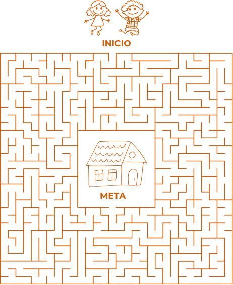
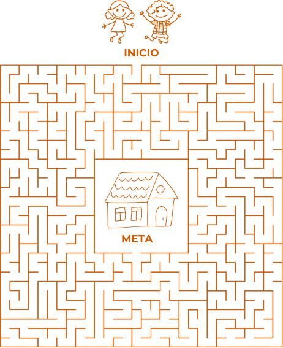

Cuando las cosas se complican o tenemos problemas, es normal pedir ayuda. Pero cuando alguien en nuestro entorno necesita ayuda, también podemos darle la mano. Emilio, está acompañando a su casa a María, y necesitan ayuda. Con tu ayuda y la de un familiar, encuentren el camino a su hogar. Después de encontrarlo, compartan momentos en los que hayan brindado ayuda a otra persona.
 
